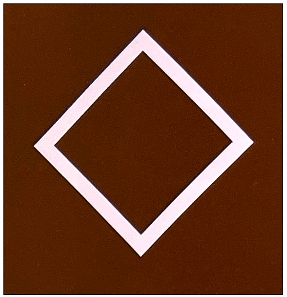
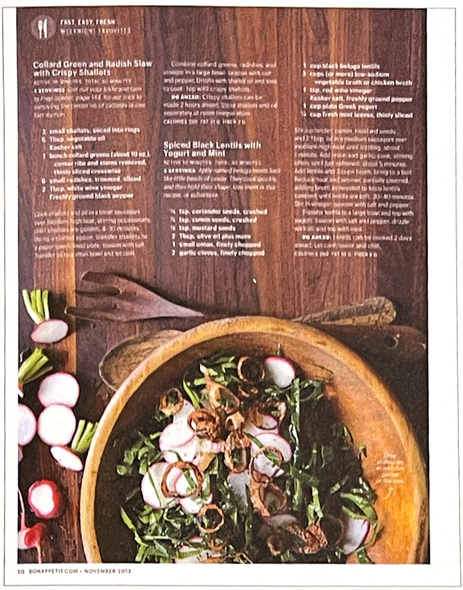
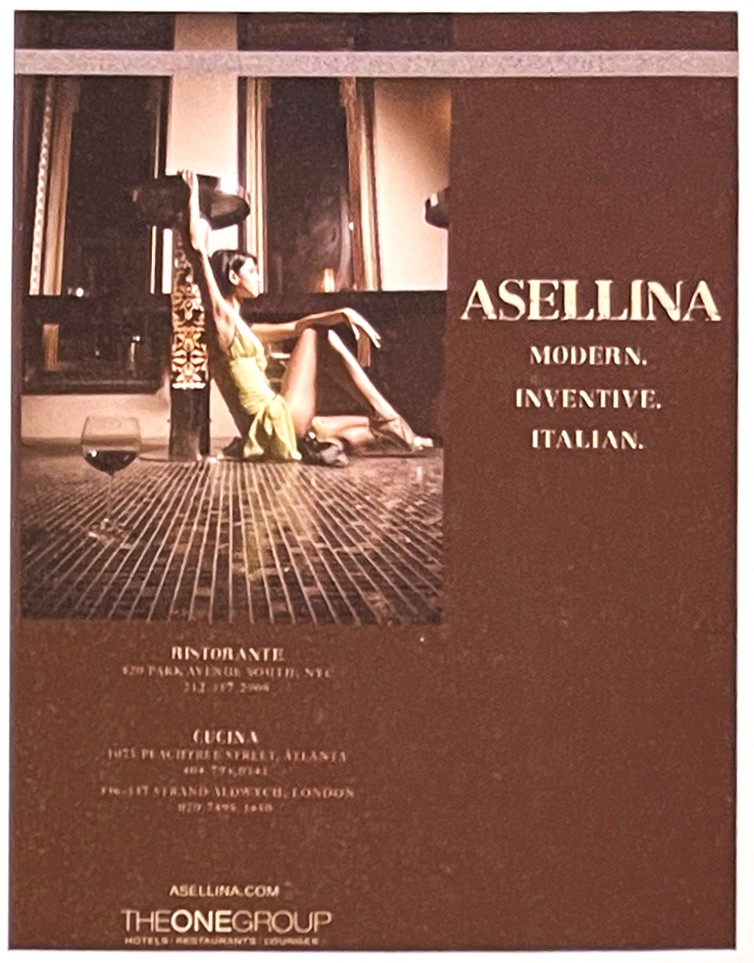
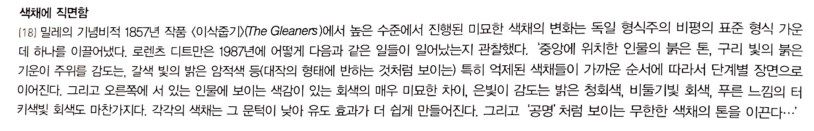
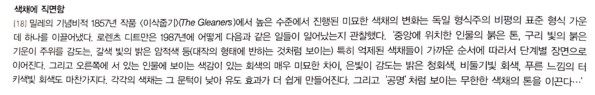
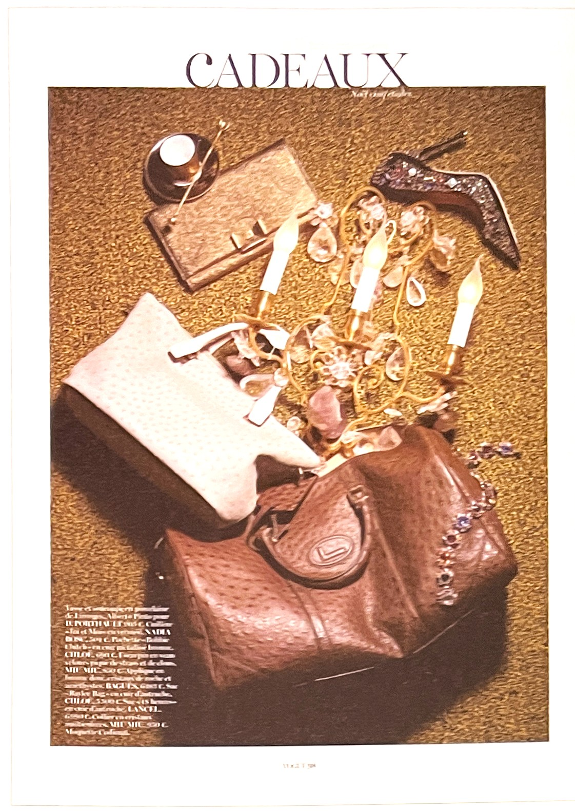
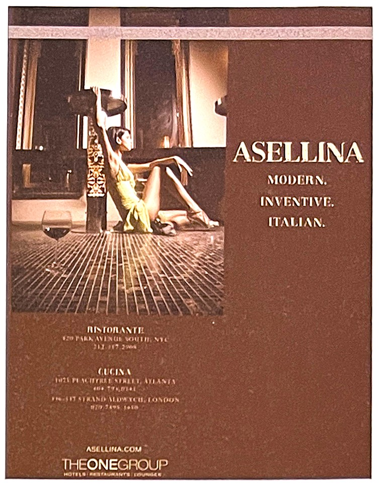
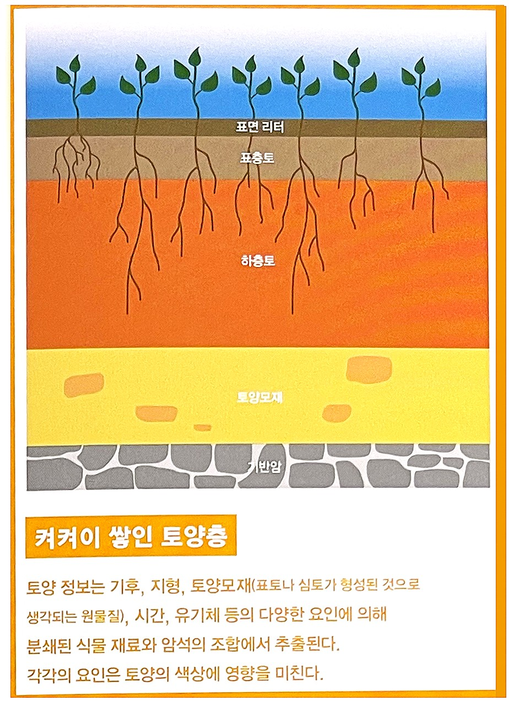
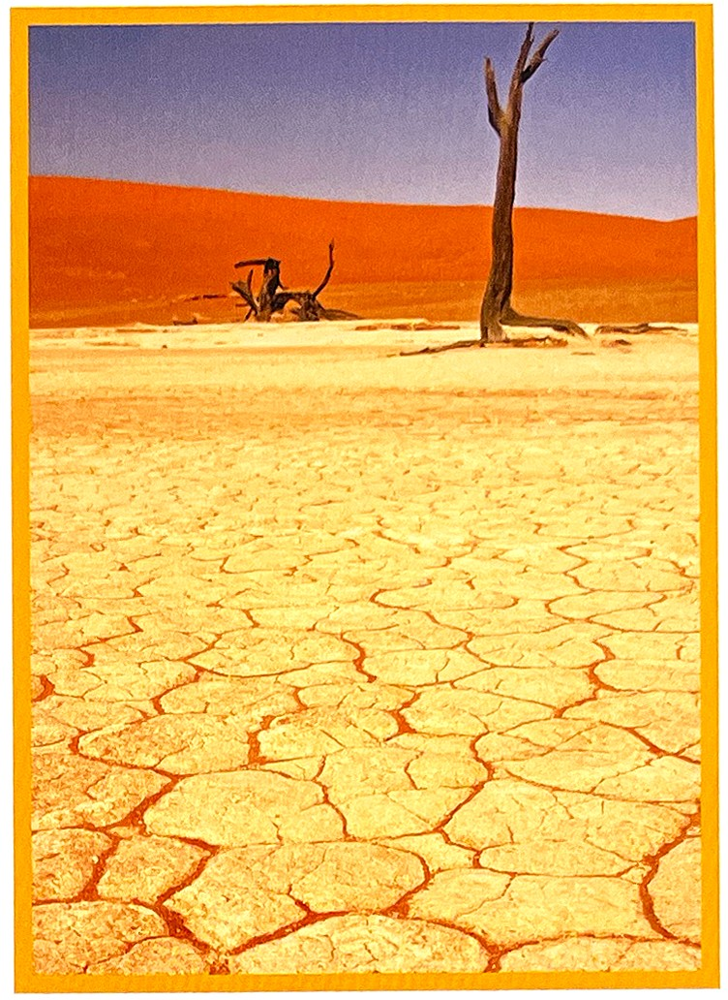

긍정적 감정과 상징: 지구 부정적 감정과 상징: 불임의, 가난 연상되는 자연/자연물: 추수감사절 정치.종교적 상징: 기독교-회개, 포기 금욕생활, 정신적 죽음, 격하
갈색의 심볼마름모[6]
갈색의 성격[5]편안한 느낌과 믿음직스럼움이 내포되어 있으며, 자극적이면서 식욕을 느끼게 할 뿐아니라 맛있고 달콤함을 연상시켜 음식의 맛을 돋우는 작용을 한다. 베이커리나 초콜릿 같은 패키지에 많이 사용된다.
1. 색의 성격오랜 시간 만들어진 색상이 가지고 있는 성격 : 외향, 정열, 적극, 단순, 냉정하지 못함, 감상적 2. 색의 영향사람이 인지했을 때 느낌 : 생명력, 따뜻함, 위험, 불안, 혁명, 흥분, 정열, 용기, 모험심, 주목성 3. 색의 처방색상을 의도적으로 활용할 수 있는 방법 : 빈혈 또는 무활력에 좋음, 강한 자극제, 몸의 지구력 회복, 감수성 자극
* 전체적으로 갈색 톤을 유지하고 이미지에서 녹색과 빨간색을 강조색으로 사용하여 자연 친화적인 느낌을 준다.
** 감수성이 있는 이미지와 공간을 표현하기 위해 갈색을 활용하였다. 사진 안 의상의 녹색과 잘 어룰린다.
갈색의 역사[7]비분광색으로서의 갈색은 이론화되지 않았으며, 철학자들과 실험 심리학자들은 갈색이 단지 분광색인 노란색의 어두운 영역에 존재하는 것이라고 주장했다. 그러나 갈색이 비록 혼합되지 않는 것으로 알려졌다 하더라도, 갈색은 장파장 분광색인 노랑, 주황, 빨강과 넓은 범위에서 유사성을 지닌다. 전통적으로, 그리고 최근까지 몇몇 유럽 문화에서 갈색은 토기의 파란색과 마찬가지로 '어둠'을 의미하는 것이엇다. 특히 회화에서 중요했던 갈색은 적어도 콘라드-마르티우수에서 출발하는 독일의 색채 분석 학파의 관심을 끌었다. 디트만은 통합적인 그림의 도구로서 갈색이 발견되는 시범을 폴레울리 Pollaiuoli와 시뇨렐리Signorelli의 작품을 통해 15세기 후반으로 추적해 들어가지만, 다른 학자들은 성장기를 논의할 때 벨라스케스와 리베라Ribera 의 초기작까지 거슬러 올라가는 경향을 보인다. 이처럼 비교적 늦게 등장한, 갈색에 대한 증명은 17세기에 갈색과 어둠 간에 존재했던 명확한 개념 관계로 인해 특별히 힘을 얻게 된다(예를 들어 프랑스에서 갈색brun은 여전히 어둠을 의미한다). 또한 같은 시기에 이베리아 반도의 회화에 대한 논문(관습적으로 사용된 흑갈색에 대한 유난히 많은 수의 목록)에서 나타나는 증거에 의해 지지된다.
 
갈색의 힘[3]

갈색의 힘[3]
갈색은 원래 존재하지 않는다. 다채로운 빛을 지닌 무지개 조차 갈색은 없다. 온갖 색으로 물들일 수 있는 하늘에 있어서도 갈색은 예외다. 그럼에도 불구하고 갈색은 태고부터 우리에게 신뢰감을 주는 이미지로 통했다. 우린 이런 갈색의 심상 위에 살고 있다고 해도 과언이 아니다. 갈색은 단단한 대지, 흙에 머물며 우리에게 안정감을 제공해 왔다.
갈색은 단단하고 견고하며 이용가치가 있다는 의미를 선사한다. 그래서 친숙하면서도 신뢰할 수 있는 안전성을 느끼게 한다.
갈색은 육체적인 긴장을 완화하는데 도움을 준다. 파랑만큼 적극적이진 않으면서도 은근한 느낌으로 이런 작용을 보인다. 버불어 육체적인 쾌감도 선사한다. 그렇다고 갈색을 퇴폐적인 색이라고 단정하는건 무리다.
갈색은 우리에게 편안함을 안겨 준다. 목재 가구를 살펴 보자. 갈색목재는 안락함을 주면서도 편안하게 환대 받는 기분을 들게 한다. 이것은 음식점이 갈색 식탁을 즐겨 사용하는 배경이다. 갈색톤의 가죽이나 모피 색상엔 포근한 느낌이 담겨 있다. 갈색의 성향은 마치 '안에 들어 가서 편히 쉬자.'는 권유와 같다.
갈색을 싫어하는 사람은 심리적으로 신체의 생명력이나 건강을 무시한다. 다시 말해 신체의 건강 상태를 고려하지 않은 채 육체적 욕구로 가득 차 있다. 이런 사람은 타오르는 성적 갈망을 억제하지 않은 채 과시하려든다. 그리고 그것을 편안하다고 느낀다. 이는 진정한 안락함이라고 할 수 없다. 육체적으로도 유익한 것도 아니다.
사회 구성원 측면에서 갈색을 멀리하는 사람은 집단에서 벗어나 모든 것을 홀로 독식하려 한다. 그래서 자신의 능력과 가치를 인정받기 위해 애쓴다.
이러한 해석이 모두에게 들어맞는 일반론은 물론 아니다. 하지만 나치 독일 독재 하의 독일에서 갈색이 국가를 상징하던 색이었다는 점을 떠올려 보자. 당시에 유행했던 갈색 제복은 게르만 민족 신화에서 유래했다. '갈색 내의'로 대변되는 옛 남성 결사대가 그것이다. 이들은 곰의 가죽을 뒤집어 쓰고 싸우는 광폭한 전사 혹은 곰 사냥꾼이었다. 예로부터 갈색은 법과 상관없이 명령에 따라 죽고 사는 막강한 권력을 지닌 사회 상류층을 상징했다. 하지만 일반인에게 갈색은 안정성과 확실성을 의미하는 흙의 이미지였다.
식물이 주는 자연스러움과는 다른 느낌의 자연스러운 색이 갈색입니다. 가죽과 나무 등에서 많이 볼 수 있는 색상이기도 합니다.[5]
감수성이 있는 나머지의 공간을 표현하기 위해 갈색을 활용하였습니다. 사진 안 의상의 녹색과 갈색이 잘 어울립니다.[5]
아름다운 토양과 점토[1]지구의 다양한 지형을 그린 조감도에는 갈색 먼지, 다양한 색상의 자갈, 베이지색 모래, 푸른 바다의 소용돌이, 흰눈이 덮인 산들이 포함될 것이다. 지구의 표면은 아마도 이렇듯 연한 회색에서 검은 갈색에 이르는 '난색조'로 가득 차게 될 것이다. 하지만 지구위 표면은 미국 미시간 주위 칼라마주부터 아주 멀리 떨어진 팀북투까지 무지갯빛 결정석과 빙하에서 만들어진 아콰마린 풀, 그리고 먼지 추출물위 갈색과는 거리가 먼 빨강부터 보라까지 다양한 스펙트럼에 걸쳐 있는 아름다운 토양을 포함하여 다양한 색상이 산재해 있다. 이러한 색상은 지구상에 생물이 존재하기 전부터 설계된 자연의 첫 번째 지도였으며 동물들이 색상을 구분할 수 있는 시야를 가지게 되면서부터 이 세상에 드러나기 시작했다.
[그림1] 켜켜이 쌓인 토양층
[그림2] 나미비아의 죽은 습지, 데드 플라이Dead Vlei지역에서 볼 수 있는 갈라진 점토
[흙Dirt]의 작가 윌리엄 로건 William Bryant Lgan은 흙을 '지구의 황홀한 피부'라고 지칭한다.
많은 사람들은 흙이 갈색이라고 생각한다. 하지만 전 세계 각지에서 가져온 샘플을 보면 그 색이 놀랍도록 다양하다는 것을 알 수 있다.
토양의 색은 산화 정도에 따라 영향을 받는다. 주황, 빨강, 갈색 등 밝은 빛깔의 토양은 산화가 잘 일어난 것이고 짙은 파랑이나 검은색 토양은 산화가 덜 된 것이다. 완전히 유기물이 된 토양은 색이 매우 연하다.
갈색의 심리학[2]갈색은 대지(大地)의 색을 상징한다. 갈색 성향의 사람은 신뢰성과 단결의식을 보여주는 전형적인 예이다. 이들은 대지에서 소금과 같은 존재, 즉 없어서는 안 될 존재이다. 현실적이고, 능력 있고, 아주 신뢰할 수 있는 사람이다. 갈색 성향의 사람들에게 흥분은 많지 않지만, 대단히 명백한 분별력이 있다. 이들은 자신감을 갖고 인생을 살아가는데도 불구하고 갈색 안에는 빨강의 불같은 성질이 남아 있어서, 이따금 놀라게 할 경우도 있다.
갈색 성향의 사람들은 확실한 것을 좋아한다. 이들은 모험을 하지 않는다. 행동하기 전에 반드시 확실을 기해야 하는 사람들이다. 그 전까지는 계획만 하고 있다. 이들은 느리기는 하지만 확실한 개발자이다. 사려 깊고 신중한 갈색 성향의 사람들은 사람들이 볼 수 있는 그 이상의 무언가가 인생 속에 있다는 것을 알고 있다.
갈색 기질의 사람들은 사태가 잘못되어가는 곳을 알고 있다. 이들은 한 가지 일에 전념하는 정조가 심오하다. 갈색의 영향을 받는 사람은 가장 믿을 수 있는 사람이다. 군가가 임무를 인계해 주지도 않고 자리를 비울지라도 이들은 그 빈자리를 잘 지켜줄 것이고, 그 사람이 오면 기꺼이 그 자리를 양보하고 물러난다.
갈색은 대지의 소금 같은 존재이다. 우리에게 자연의 끊임없이 순환 능력을 상기시켜 준다
색채 연구가들은 아편 중독자들이 특히 갈색을 선호한다고 한다. 갈색 이미지를 긍적으로 활용하는 사람은 건강을 챙기는 도구로 사용한다. 갈색은 육체의 민감성을 쉽게 드러낸다. 병원에 입원한 아이들을 보면 그렇다. 어린이들은 유독 갈색에 호감을 가지고 있으며 자신의 건강에 관해 무척 민감하다. 초등학교 어린이 중에서도 특히 열악한 주위 환경에 고통받는 어린이도 갈색을 좋아한다. 이는 버팀목으로서 뿌리를 갈망하는 모습이다. 갈색은 패션, 광고, 그리고 제품 등에서 종종 사용되었던 색으로 과거부터 널리 쓰였다.[3]

구리는 조용하면서도 교화적인 활동을 상징한다. 구리청동은 극적인 전시효과 없이도 변화를 일으킨다.
갈색으로 표현된 패션[4]갈색은 톤온톤으로 아이보리-베이지-카키계열의 색들과 코디네이션되어 자연스러운 에콜로지 패션을 연출한다. 풍부한 느낌의 주황색이나 녹색계열과 함께 사용하여 가을 낙엽의 색으로 현대적 이미지를 연출할 수 있다. 로얄블루나 골드와 함께 사용하여 여성의 매력을 부각시키기도 한다.
남성수트에서는 갈색게열과 검정계열의 색을 함께 사용하지 않는 것이 일반적이다. 회색수트에 갈색구두와 가방의 패션 악세사리와 함께 이지적이고 세련된 이미지를 연출한다.
갈색 인테리어[4]갈색은 중성적인 색 범위에 있으므로 색조에 따라 어떠한 공간에도 어울릴 수 있는 색이다. 나무 재질의 침대, 소파, 장롱, 선반 등에서 사용되어 인테리어에서 가장 많이 사용되는 색 중 하나이다. 짙고 깊은 갈색은 따뜻하고 부드러운 성질과 함께 클래식하고 중후한 분위기를 연출한다. 그리하여 일반적으로 거실에서 많이 사용되는 색이다.
아이보리ivory, 베이지beige, 카키khaki, 브릭brick과 함께 사용하면 보다 자연적인 안락함을 준다. 옅은 파랑이나 마젠타와 같이 뜻밖의 색들과 함께 사용하여 산뜻하고 세련된 느낌을 전하여 어두운 갈색을 조화롭게 할 수 있다.
[참고문헌]:
[1] 컬러, 그 비밀스러운 언어 COLOR, 조앤 액스터트, 아리엘 엑스터트, 신기라 옮김,시그마 북스, 2014.9.10.
[2] 몸과 마음을 치료하는 색채, 릴리안 베르너 본즈, 번역 한창환, 도서출판 국제, 2008.1,10.
[3] 색의 힘, 하랄드 브램, 번역 이재만, 일진사, 2010.5.20.
[4] 색채 기획을 위한 색이야기, 김문여 김봉섭 안희정, 교학연구사, 2011. 6.30.
[5] 좋아 보이는 것들의 비밀 편집&그리드, 이민기 지음, 길벗, 2015.5.1.
[6] 색채 디자인 교과서, 문은배 지음, 길벗, 2010.12.28
[7] 색채의 역사-미술, 과학 그리고 상징, 존 게이지 지음, 박수진 한재현 옮김, (주)사회 평론, 2011. 5.11
....
....
....
....
....
....
....